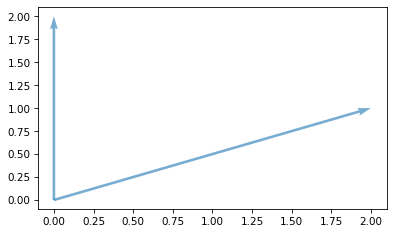
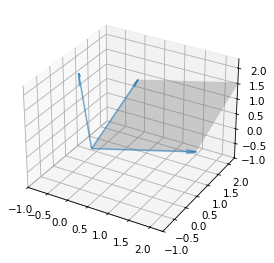

Think Linear Algebra is not for sale yet, but if you would like to support this project, you can buy me a coffee.
Title#
Click here to run this notebook on Colab.
%load_ext autoreload
%autoreload 2
Show code cell content
%load_ext nb_black
Show code cell content
from os.path import basename, exists
def download(url):
filename = basename(url)
if not exists(filename):
from urllib.request import urlretrieve
local, _ = urlretrieve(url, filename)
print("Downloaded " + local)
download("https://github.com/AllenDowney/ThinkLinearAlgebra/raw/main/utils.py")
Show code cell content
import numpy as np
import pandas as pd
import matplotlib.pyplot as plt
from utils import decorate, underride
Section#
import numpy as np
import matplotlib.pyplot as plt
from mpl_toolkits.mplot3d import Axes3D
def plot_vectors(
vectors,
origin=None,
start=0,
end=None,
scale=1,
labels=None,
label_pos=None,
**options
):
"""Plot a set of vectors in 2D or 3D.
Args:
vectors: list of vectors or array with one row per vector (shape: (N, 2) or (N, 3))
origin: list of vectors or array with one row per vector (default: all at (0,0) or (0,0,0))
start: integer slice index
end: integer slice index
scale: factor to multiply vectors
labels: list of string labels
label_pos: list of locations as integer clock positions (only for 2D)
options: passed to plt.quiver
"""
vectors = np.asarray(vectors) * scale
dim = vectors.shape[1] # Determine 2D vs. 3D
if origin is None:
origin = np.zeros_like(vectors)
else:
origin = np.asarray(origin)
underride(
options,
color="C0",
alpha=0.6,
)
ax = plt.gca()
if dim == 2:
# 2D case using plt.quiver
us, vs = vectors[start:end].T
xs, ys = origin[start:end].T
underride(
options,
angles="xy",
scale_units="xy",
scale=1,
)
ax.scatter(xs, ys, s=0)
ax.scatter(xs + us, ys + vs, s=0)
ax.quiver(xs, ys, us, vs, **options)
elif dim == 3:
# 3D case using ax.quiver
us, vs, ws = vectors[start:end].T
xs, ys, zs = origin[start:end].T
underride(
options,
arrow_length_ratio=0.1,
)
ax.scatter(xs, ys, zs, s=0)
ax.scatter(xs + us, ys + vs, zs + zs, s=0)
ax.quiver(xs, ys, zs, us, vs, ws, **options)
else:
raise ValueError("Only 2D and 3D vectors are supported.")
v1 = np.array([2, 1])
v2 = np.array([0, 2])
plot_vectors([v1, v2])

def plot_plane(v1, v2, origin=None, **options):
"""Plot a shaded plane spanned by two vectors in 3D.
Args:
v1: First vector defining the plane (array-like, shape (3,))
v2: Second vector defining the plane (array-like, shape (3,))
origin: Origin point of the plane (default: [0, 0, 0])
options: Passed to plot_surface (e.g., color, alpha)
"""
v1, v2 = np.asarray(v1), np.asarray(v2)
if len(v1) != 3 or len(v2) != 3:
raise ValueError("plot_plane requires 3D vectors.")
if origin is None:
origin = np.zeros(3)
else:
origin = np.asarray(origin)
# Generate a mesh grid for the plane
u = [0, 1]
v = [0, 1]
U, V = np.meshgrid(u, v)
# Plane equation: P = origin + U * v1 + V * v2
X = origin[0] + U * v1[0] + V * v2[0]
Y = origin[1] + U * v1[1] + V * v2[1]
Z = origin[2] + U * v1[2] + V * v2[2]
underride(options, color="gray", alpha=0.3)
# Plot the plane
ax = plt.gca()
ax.plot_surface(X, Y, Z, **options)
fig = plt.figure()
ax = fig.add_subplot(111, projection="3d")
# Example usage to visualize the cross product
v1 = np.array([2, 1, 0])
v2 = np.array([0, 2, 1])
v3 = np.cross(v1, v2)
plot_plane(v1, v2)
plot_vectors([v1, v2, v3])
lim = [-1, 2.3]
decorate(xlim=lim, ylim=lim, zlim=lim)

import matplotlib
print(matplotlib.__version__)
3.10.0
Copyright 2025 Allen B. Downey
Code license: MIT License
Text license: Creative Commons Attribution-NonCommercial-ShareAlike 4.0 International